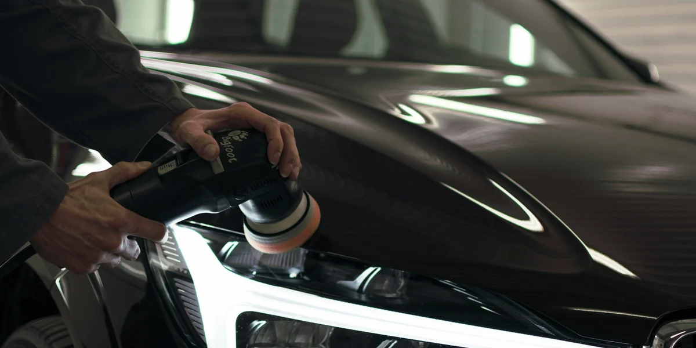

Service II · Paint & protection
Paint correction & ceramic coating.
Detailing, grounded in chemistry. Ceramic coating, PPF, wraps and matte paint, handled in the order the work actually happens: correct, protect, maintain.
Correct
Remove — fine circular scratches from washing, seen in sunlightSwirl marks: Tiny scratches, often from brushes or dirty mitts, that show as a spider-web pattern in direct light. Polishing levels them out. All terms and scratches first: anything left under a coating or film gets locked in. I machine-polish ( — machine polishing that removes swirls and light scratchesPaint correction: Polishing a thin, measured layer of clear coat to level out swirl marks, haze and light scratches so the paint reflects cleanly again. Deep scratches through the clear coat can't be polished out. All terms) with professional — a stronger polish that removes deeper swirls and scratchesCompound: A cutting polish run by machine to level the clear coat around deeper defects. It is followed by a finer polish to bring the gloss back. All terms and — fine machine polishing that brings back gloss and clarityPolish: A fine abrasive run by machine to remove haze and light marks and bring up a clear, glossy finish. It is the last step after compounding, or used alone on paint in good shape. All terms, on-site in your driveway or garage. No garage needed. Three grades, from a one-step polish to a two-step compound and polish; Grade III takes up to 2 days, so it's drop-off only. Every panel is — measures paint thickness in microns before and during polishingPaint gauging: A paint-depth gauge reads how thick the paint is on each panel, in microns (thousandths of a millimeter). It shows how much clear coat there is to work with, so only what's needed is removed. All terms before I polish and checked again as I go: I take off only what's needed, measured in microns. Not sure which grade? I'll do a free test spot first so you can see the result on your own paint.
Paint correction · three grades Available now · Grades I–II on-site
Grade I · polish
Gloss enhancement, one step
Best forGood paint with light haze or dullness, and the minimum prep under every coating
- One machine-polishing step for gloss and clarity
- Removes light haze and the finest swirls
- Panel-by-panel paint-depth readings & 50/50 photos
Pricefrom $399
Every gradeEvery panel is paint-gauged; your price is confirmed after inspection and a written quote.
Book Grade IGrade II · one-step compound & polish
Most swirls out, one pass
Best forA daily driver with light-to-moderate swirls and wash marring
- An all-in-one compound & polish on every panel
- Removes most light-to-moderate swirls
- Paint-depth readings & 50/50 photos
Pricefrom $549
Every gradeEvery panel is paint-gauged; your price is confirmed after inspection and a written quote.
Book Grade IIGrade III · two-step
Compound, then polish
Best forHeavy swirls, deeper scratches and wash marring, dark paint
- A cutting compound step for defect removal
- Then a finishing polish for full clarity and depth
- Paint-depth readings & 50/50 photos
TimeUp to 2 days · drop-off only
Pricefrom $799
Every gradeEvery panel is paint-gauged; your price is confirmed after inspection and a written quote.
Book Grade IIIScratches through the clear coat can't be polished out safely; I'll tell you at the walkaround. Text photos for a quote first.
Protect
Ceramic coating by me, in your garage. You choose the coating separately from the correction grade: the grade fixes the paint, the coating protects it. PPF, wraps, tint and chrome deletes through my install partner.
Ceramic soap, ceramic sealant, Halo, ceramic coating — four steps up. Refresh washes with a wax soap; Renew with a ceramic soap its maker rates for up to 3 months. Radiance adds a full decon and a hand-applied ceramic sealant, maker-rated up to 6 months or 50 washes. Halo is a spray coating, maker-rated up to 12–18 months, $149 with any detail on a sedan — Halo on the detailing page. A ceramic coating is a different product: a much harder, semi-permanent layer that bonds to the paint and lasts years — and because it locks in whatever is underneath, the paint is polished first. I apply paint coatings in your garage; glass, wheel and tire coatings can be added to any visit.
Choose your coating
Four coatings, one standard of prep.
Every coating goes on the same way: washed, Decontamination: Chemical and mechanical steps (iron remover, tar remover, clay) that clear what is stuck to the paint, so protection bonds to clean paint instead of grime. All terms, Clay bar: A soft clay glides over lubricated paint and pulls out grit that washing leaves behind. It doesn't add gloss by itself, but with the grit gone the paint feels smooth and reflects more clearly. All terms, — an alcohol wipe that leaves paint bare for coatingsPanel wipe: A solvent wipe that removes polishing oils and old residue just before a coating, so the coating touches clean clear coat and can bond. All terms and inspected, in your garage — on gloss paint over the correction grade you choose. What changes is the chemistry on top. The right coating is the one that fits your car and how you use it, not the most expensive one — I confirm it with you at a free inspection; find your coating with the advisor. Durability is each maker's own rating; real life depends on how the car is driven, washed and stored.
Essential · one layer
Easy-care gloss
Best forLeases, newer cars, a first coating · 2–3 years
- Maker-rated
- Rated by the makerup to 24 months. Applies almost as easily as a wax; gloss, water repellency, self-cleaning, UV protection.
Coating$500 + your correction grade
Signature · gloss-focused
The deepest gloss
Best forGarage-kept cars, dark paint, a wet look · 2–3 years
- Maker-rated
- Rated by the makerup to 36 months. A single, gloss-focused layer with strong water repellency.
Coating$600 + your correction grade
Reserve · the longest ratings
The 4–5-year class
Best forA keeper through Utah winters, salt, trails or job sites · 4–5+ years
- Option 1
- Rated by the makerup to 50 months. A two-stage system: a base layer for strength and chemical resistance, a top layer for extreme beading and slickness.
- Option 2
- Rated by the makerup to five years, properly applied and maintained, with a top coat for beading and dirt release.
Coating$700 + your correction grade
Matte · vinyl · PPF
Film & matte coating
Best forMatte or satin paint, vinyl wraps, paint protection film · no polishing
- Option 1
- Rated by the makerup to 24 months on matte and satin paint, film and vinyl, with a film-specific version for PPF.
- Option 2
- Rated by the makerup to two years on PPF and vinyl, or the maker's own rating for its PPF and vinyl coating.
Coatingfrom $629 · decon wash included, no correction
Complete: coat every surface
Complete: every surface, with a coating — all glass, trim and wheel faces with the longer-rated coatings, and the tires: $550 on a sedan ($586 if coated one by one). Or pick surfaces one at a time on Glass & wheels; brake calipers are $79 (they need the wheels off or open-spoke access).
Price. A coating on gloss paint = the coating + the correction grade it goes over: on a sedan, Essential $500 + Grade I $399. Heavily swirled paint needs Grade III (+$400 more than Grade I on a sedan). The film & matte coating has no correction. Every panel is paint-gauged; your price is confirmed after inspection and a written quote. Find your coating for a live estimate, or request a quote.
Add to it. Glass, wheel, trim and tire coatings at two levels, each named by its maker's rating. With any detail: windshield $59 or all glass $149 rated for multiple seasons, wheel faces $69 spray-on (no maker time rating), faded trim $79 rated for 200 washes; or the longer-rated coatings — windshield $129 or all glass $219 up to 24 months or 20,000 miles, wheel faces $179 up to 18–24 months, trim $129 up to 24–36 months; the ceramic tire coating is $59. Wheels-off wheel coating from $399: quoted in person — garage required. Interior: interior panels coating $109, leather coating $159, fabric & Alcantara coating $119.
Where. Paint coatings and wheels-off work need a garage I can work in, so the coating goes on and cures out of the sun, wind and dust.
Ask me about the warranty terms for whichever coating you choose.
How coatings work A coating cures into a thin, glass-like silica layer that makes water bead and gives dirt less to grip, and it bonds only as well as the surface is prepared. The chemistry, with sources.
Ceramic coating
Multi-year ceramic coating (compare the coatings), from $500 for the coating on a sedan, plus the correction grade from $399. Paint is always polished first, because a coating locks in whatever is under it. I do it in your garage, so the coating goes on and cures out of the sun, wind and dust. Find your coating → The first 5–7 founding customers get a founding price on the coating itself — ask when you request a quote — in exchange for letting me take before/after photos and quote your feedback here.
PPF, tint, wraps & chrome deletes
Installed by a local PPF, tint and wrap shop I work with. I handle the prep and aftercare; they handle the film. You book and pay the install shop directly, and they quote the film work.
Ask about bundles — tint + an Interior detail, headlight restoration + headlight PPF, or a chrome delete with wrap-safe aftercare.
Coating Care
A coating is only as good as its upkeep.
Every coating comes with a plan to keep it working, and the warranty depends on it. Between annual visits, wash it the right way: pH-neutral soap, no automatic brush washes. Every Refresh Wash on a coated car ends with a ceramic topper: it refreshes the coating's slickness and water beading and adds a thin sacrificial layer that takes the wear instead of the coating — included in the wash.
Included with every coating · no charge
30-day check-in & care card
- A check-in about 30 days after installation: I inspect for high spots, confirm the cure and fix anything, free
- A care card: pH-neutral soap only, no automatic brush washes, dry with a blower or plush towel, bird droppings off the same day, sprinklers pointed away from the car
- Your first maintenance visit booked before I leave
Once a year · keeps the warranty
Annual Coating Service · from $199
- Inspection and photos
- Decontamination wash with a mineral (acidic) remover to clear clogged, dull spots and bring the beading back
- Iron removal
- Top-up with the coating maker's booster
- Your warranty record updated
Same service asDecon & Reseal; the price scales with your vehicle. The first one is 25% off when a Reserve coating goes over Grade III correction.
Prepay at installation
Two annual services · $349 on a sedan
- About 12% off two Annual Coating Services, paid when the coating goes on
- Scales with vehicle size
Warranty, plainlyYour coating is covered for the maker's rated period against failure of the coating itself, as long as the care card is followed and the Annual Coating Service is done within 30 days of each anniversary (with me, or documented equivalent maintenance). Not covered: damage such as chips, scratches or collisions, improper washing, and neglect. On the coatings I install, that warranty is my own workmanship warranty; manufacturer-backed guarantees apply only through each brand's accredited installers.
Maintain
Already coated, wrapped, filmed or matte? Most washes undo that protection: wax on matte, pressure washers at film edges, harsh degreasers on coatings. The three services below are built to be finish-safe (products by finish), and Decon & Reseal removes the mineral film that makes a coating stop beading (why coatings clog).
Refresh Wash
$119
- Finish-safe hand wash with careful, edge-safe drying
- Iron fallout gently dissolved where needed
- Topper matched to your finish — ceramic coating, film or matte
- On coated cars, included: a ceramic topper: it refreshes the coating's slickness and water beading and adds a thin sacrificial layer that takes the wear instead of the coating
- Beading & sheeting checked on coated cars
Time: about 2 hours
Book Refresh WashDecon & Reseal
$199
- Full chemical decon — iron fallout & mineral spots removed
- Brings back that just-coated beading & self-cleaning
- Fresh ceramic sealant topper over coating, film or matte
Time: about 3.5 hours
Book Decon & ResealProtected Full Detail
$269
- Interior — Radiance
- Finish-safe Refresh Wash outside
Time: about 4.5 hours
Book Protected Full DetailEach finish, its own products
Each finish gets its own products — the wrong soap or pressure can dull, stain or lift it. Every finish starts with a gentle pH-neutral foam; anything stronger is tested first.
| Finish | What I use | Why |
|---|---|---|
| Ceramic-coated paint | pH-neutral shampoo or a matching ceramic wash, then a ceramic topper; no wax, no harsh degreasers | Wax hides the coating's beading; strong cleaners wear it down. The topper refreshes slickness and beading, and takes the wear instead of the coating. |
| Gloss vinyl wrap | pH-neutral wash, vinyl-safe products, no solvents; pressure kept back from edges | Solvents dry the film out; spray aimed at an edge can lift it. |
| Matte vinyl wrap | Matte-safe shampoo; no wax, gloss or polish; blotted dry | Anything glossy fills the texture and leaves shiny patches. |
| Gloss PPF | pH-neutral wash, film-safe products, gentle at edges; a light polish only if needed | Strong solvents can yellow the film or attack its adhesive. |
| Matte PPF | The matte and the film rules together: no gloss products, no polish, careful at edges | It can be dulled like matte and lifted like film. |
| Matte paint | Matte-safe shampoo and matte-specific products only; never polished | Polishing leaves shiny spots that can't be undone. |
Coated by someone else? Welcome — tell me who installed it; some coating warranties also need the installer's annual inspection.

Measured, not guessed
Clear coat is finite.
Factory clear coat is typically about 35–50 microns, thinner than a sheet of paper, and every pass of a polisher takes a little of it. So every panel is gauged before I polish and again as I go, a test spot comes first, and I take only as much as the finish needs.
You get 50/50 photos, half corrected and half not, so you can see what changed.
The science behind itCoating advisor
Find your coating.
For multi-year ceramic coatings only — a separate service from detailing, with its own prices. Seven questions about the finish, how long you'll keep the car and how it's driven give you a likely fit (coating, correction grade, surfaces), confirmed at your free inspection, and a live estimate for your vehicle.
Turn on JavaScript for the coating advisor, or text me your year, make and model and how you use the car.
Text me about a coatingChange anything, then send the plan to me. Prices are confirmed after inspection and a written quote. Pricing a detail instead? Get my price.
Questions
Coatings & correction.
Can you do paint correction and ceramic coating at my place?
Yes, for Grades I and II: they're done on-site, outside or in your garage; you don't need a garage for them. Grade III (two-step) can take up to 2 days, so it's drop-off only. Ceramic paint coatings and wheels-off wheel coatings (quoted in person) need a garage I can work in, so the coating goes on and cures out of the sun, wind and dust, and the paint is always polished first. Glass, wheel-face and tire coatings can be added to any visit. No garage? Drop-off is coming once I have a workspace.
Wax soap, ceramic soap, ceramic sealant, coating — what's the difference?
They're different products, each a step up. Wax soap (Refresh) washes and leaves a little gloss and water beading between visits. Ceramic soap (Renew) is a ceramic-infused wash that leaves a slick, water-beading layer its maker rates for up to 3 months. Ceramic sealant (Radiance) goes on by hand, panel by panel, after a full decon and the ceramic soap wash — maker-rated up to 6 months or 50 washes. Halo upgrades any detail to a spray coating, maker-rated up to 12–18 months. All of these are light layers that are easy to renew at your next detail. A ceramic coating (you choose the level) is a much harder, semi-permanent layer that bonds to the surface and lasts years. Because it locks in whatever is underneath, the paint is polished first. Paint coatings are available now if you have a garage I can work in (find your coating); glass, wheel and tire coatings can be added to any visit. Your quote always says which one you're getting.
My car has a ceramic coating from another shop. Can you maintain it?
Yes. Refresh Washes and Decon & Reseal are built for coated cars. Tell me who installed it — some coating warranties require an annual inspection by the original installer.
Is it safe for my matte paint or wrap?
That's the specialty. Matte-specific products only, no wax or gloss enhancers, and careful technique at every film edge.

Book
A price for your exact car, up front.
Pick your vehicle and services online, or text me a few photos and I'll tell you what's likely needed — confirmed when I see the vehicle.
(385) 218-0990